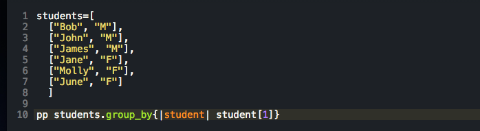
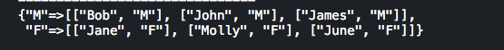

The Enumerable module in Ruby is like the blueprint of what each method should look like. Each data type that has the Enumerable module included in its source, gets those methods for free without any additional work. If the method needs to be changed for any reason, such as one does not get the expected output, those methods can be overridden from the code. I would like to take a minute to talk about the Enumerable#group_by method and why it can be very helpful at times. As one would expect, the group_by method allows for the grouping of data into a hash.
Lets take this example where you had a list of students and you wanted to group them by their sex. One can use the group-by method, to transform an array of arrays (in this case) to group people by their sex.
The code might look something like this:
 The output of the code would look like this: For any additional information on Enumerables check out the ruby docs.
 Andrew Blum
Andrew Blum